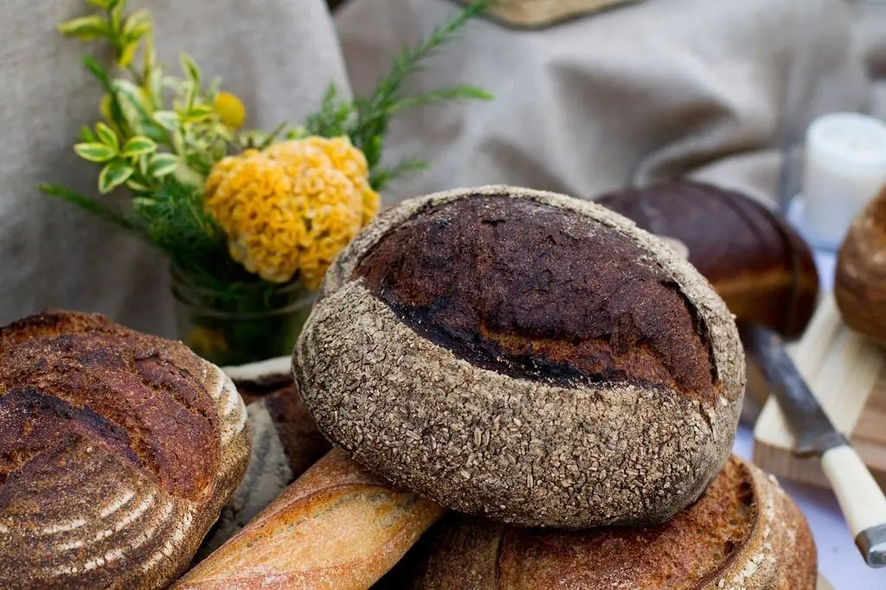
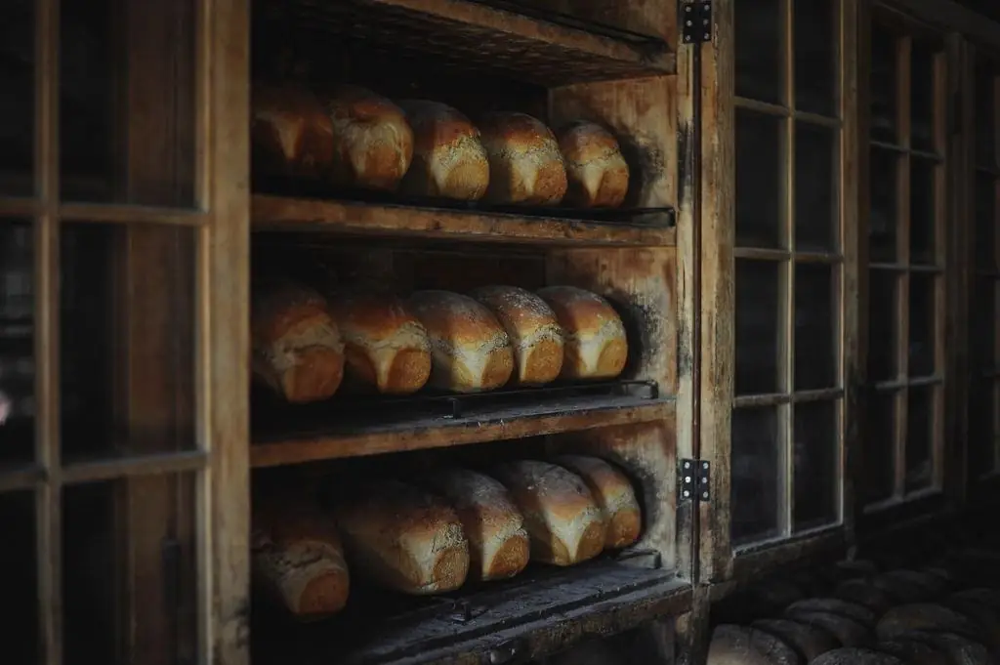
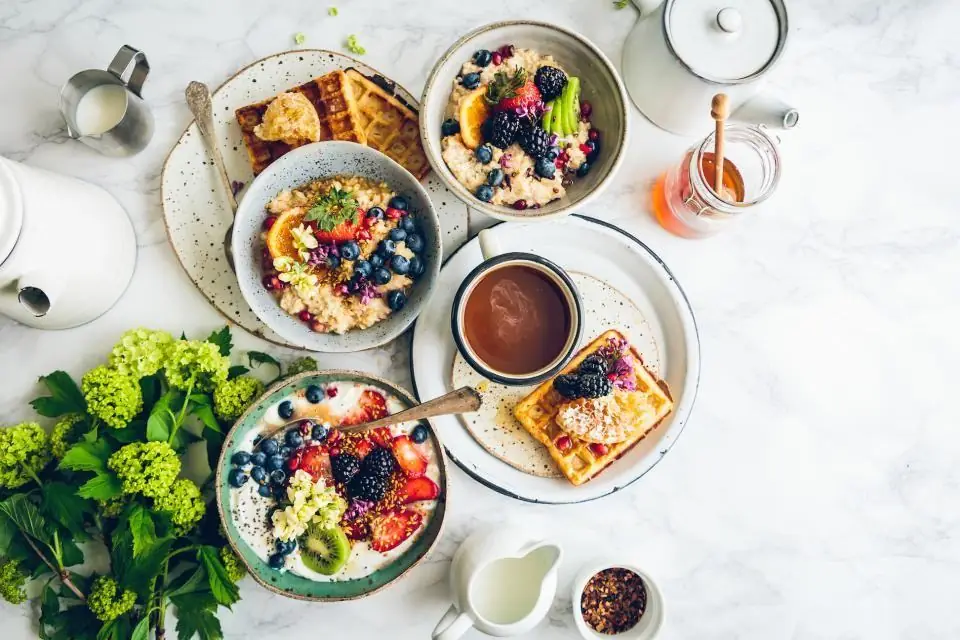
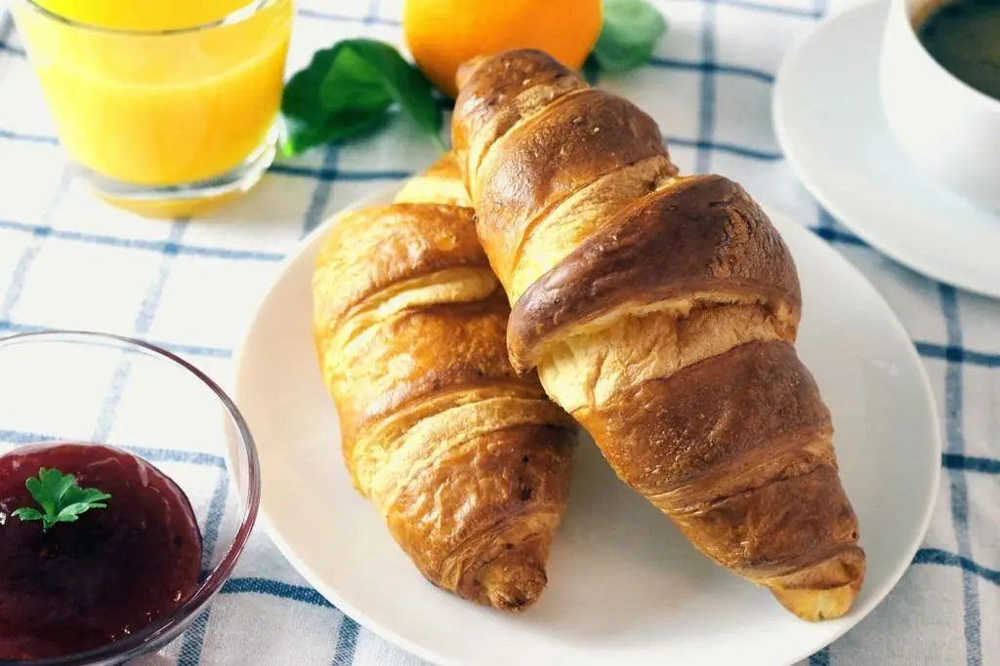

Bullarna är varma när vi låser upp
Frukost från sju, lunch klockan elva och fika hela dagen. Surdegsbröd, wienerbröd och kardemummabullar bakas på plats varje morgon.
Frukost, lunch eller bara en bulle?
- 01
Frukost från 7
Frukostbricka med surdegsbröd, ägg, yoghurt och kaffe till klockan tio.
Läs mer - 02
Lunch 11–14
Dagens soppa, paj eller smörrebröd med bröd och sallad.
Läs mer - 03
Fika hela dagen
Kardemummabullar, wienerbröd, kladdkaka och kaffe från eget rosteri i Gävle.
Läs mer - 04
Hela menyn
Frukost, lunch, bakverk och bröd med priser.
Läs mer - 05
Surdegsbröd
Råg, dinkel och vete – bakat i stenugnen samma morgon.
Läs mer - 06
Beställ tårta
Tårtor och smörgåstårtor till kalas, beställ tre dagar innan.
Läs mer - 07
Glutenfritt
Glutenfritt bröd och kakor bakade på torsdagar, i en egen ugn.
Läs mer - 08
Hitta hit
Brynäsgatan 14, fem minuter från Gävle centralstation.
Läs mer
Frukost, fika och lunch
Frukostbricka
Allt du behöver för att komma igång.
119 krvardagar 7–10, helg 8–11- Surdegsbröd, smör och ost
- Kokt ägg och yoghurt med granola
- Färskpressad apelsinjuice
- Kaffe eller te med påtår
- Mest beställd
Fika för två
Två bakverk ur disken och två koppar kaffe.
149 krhela dagen- Valfria bullar eller wienerbröd
- Bryggkaffe, te eller cappuccino
- Påtår för tio kronor
- Havremjölk utan extra kostnad
Lunch
Soppa, paj eller smörrebröd på bageriets bröd.
fr. 109 krvardagar 11–14- Nybakat bröd och smör
- Sallad från disken
- Kaffe och en liten kaka
- Vegetariskt alternativ varje dag
Alla priser inklusive moms. Fråga i kassan om allergener – vi har glutenfritt på torsdagar.


Nytt i disken


Stamgästerna om oss
Vi har ätit frukost här varje lördag sedan barnen var små. Gröten med lingon är fortfarande bäst i stan.
Eva och Per N.Brynäs Beställde en smörgåstårta till studenten för trettio personer. Den var klar på minuten och såg ut precis som vi hade bett om.
Hanna S.Gävle Jag tar en kardemummabulle och en kaffe på väg till tåget varje morgon. De vet vad jag ska ha innan jag har hunnit säga något.
Mattias K.Sätra

Beställ tårta till kalaset
Prinsesstårta, chokladtårta, morotskaka eller smörgåstårta – från sex till fyrtio bitar. Beställ senast tre dagar innan, så står den klar i disken när du kommer.
Säg till om allergier när du beställer, så bakar vi utan nötter eller laktos.
- Bilder
Från bageriet och kafét
Se hela menynIllustrationsbilder 





Bra att veta innan du kommer
Hittar du inte svaret? Ring eller mejla oss.
01Kan jag boka bord?
Nej, vi har inga bordsbokningar. Till sällskap på fler än åtta personer kan du ringa så ställer vi i ordning ett långbord.
02Har ni glutenfritt?
Ja, glutenfritt bröd och kakor bakas varje torsdag i en egen ugn. Det finns i frysen resten av veckan.
03Hur långt i förväg ska jag beställa tårta?
Senast tre dagar innan hämtning. Till studenten och midsommar gärna två veckor innan.
04Har ni laktosfria alternativ?
Havremjölk till kaffet ingår, och vi har alltid en laktosfri kaka och laktosfritt smör till brödet.
05Kan jag beställa bröd till kontoret?
Ja, vi levererar frukostbröd och kaffebröd till företag i Gävle från tio personer, vardagar före klockan nio.
06Får man ta med hund?
Ja, på uteserveringen. Där finns vattenskål och hundgodis vid disken.
Beställ tårta eller bröd
Skriv vad du vill ha, hur många bitar och vilken dag du vill hämta. Vi bekräftar pris och tid samma dag.
- Telefon
- 070-174 06 54
- E-post
- hej@kvarnbacken.se
- Öppettider
- Mån–fre 7–17, lör–sön 8–16